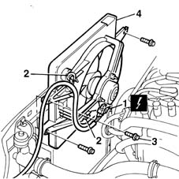
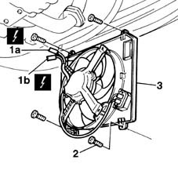

1088E10 radiator cooling fan - r + r
- Path
- Procedures > 10 ENGINE UNIT > 1088 ENGINE COOLING > 1088E coolant temperature control devices > 1088E10 radiator cooling fan - r + r
- Kind
- repair procedure (removal / refitting; the operation number is the code)
- Applies to
- all engines; all production periods
- Interactive page
- https://sloeber94.github.io/elrnDB-fMltpl/en/#/2891337
Applies to: engines: 1.6 16v; all production periods
 Removing
Removing
 Refitting
Refitting1048A10 AIR CLEANER FILTERING ELEMENT - REPLACE
Disconnect the battery negative (-) terminal.
1. Disconnect the fan electrical supply connection.
 | Name | Connector |
|---|---|---|
1 | Engine electric fan motor |
2. Release the electrical wiring from the securing bands.
3. Undo the retaining bolts.
4. Remove the fan, withdrawing it from the top of the car.

Applies to: engines: 1.6 16v; all production periods
Refitting
RemovingCheck the condition of the fan.
Fit the fan and secure it using the bolts.
Connect the electrical connection.
Secure the wiring using the collars.
1048A10 AIR CLEANER FILTERING ELEMENT - REPLACE
Connect the negative (-) battery terminal.
Applies to: engines: 1.9 JTD 8V; all production periods
Removing
RefittingPlace the car on a ramp.
1. Disconnect fan electrical connections (1a) and (1b).
2. Undo the bolts.
3. Remove the fan from underneath the car.
| Name | Connector |
|---|---|---|
1a | Engine fan adjustment resistor |

Applies to: engines: 1.9 JTD 8V; all production periods
Refitting
RemovingCheck the condition of the fan.
Fit the fan in its seat.
Tighten the bolts securing the fan to the radiator.
Connect the fan electrical connections.
Topics linked from this page (3)
- 1048A10 AIR CLEANER FILTERING ELEMENT - REPLACE
- N11 Engine electric fan motor
- O10 Engine fan adjustment resistor
Topics that link to this page (10)
- D31 ENGINE OVERHEATING / WITH FAN NOT WORKING
- S59 ENGINE FAN NOISE'
- 1004B10 power unit with manual gearbox - r + r
- 1020D26 flywheel side oil seal cover - r+r
- 1024B10 engine flywheel - r + r for versions with manual gearbox
- 1056B90 system cable bundle - r + r
- 1088B20 engine cooling radiator - r + r
- 1810A20 clutch - r + r
- 1820A24 thrust bearing linkage - r + r
- 2110A10 manual gearbox and differential - r + r